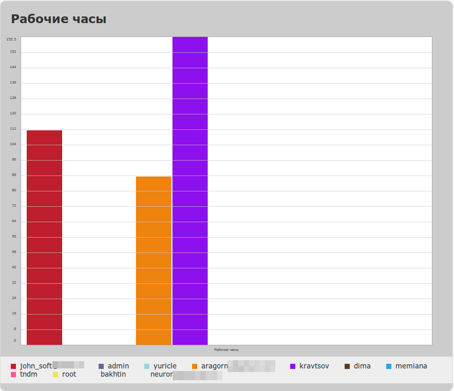
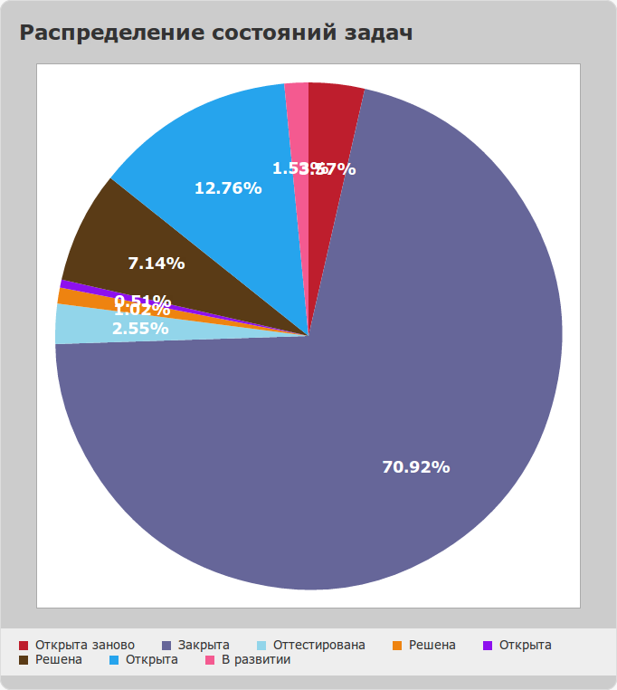
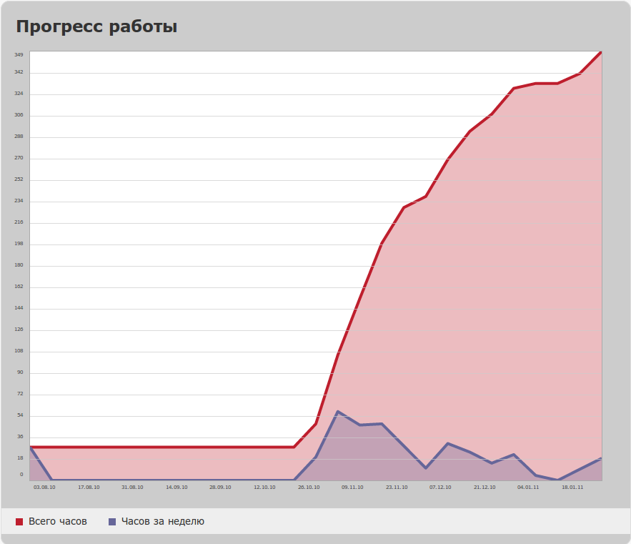

|
<< Click to Display Table of Contents >> Navigation: Rus > Руководство разработчика > Как писать скрипты и триггеры в TrackStudio > Как построить графики в TrackStudio по вашим данным |
Внимание! Данный способ будет работать только в браузерах, поддерживающих HTML5
С помощью javascript-модуля visualize, созданного Filament Group в TrackStudio можно строить графики четырех типов:
•столбчатые диаграммы (bar)
•круговые диаграммы (pie)
•линейные графики (area и line)
Плагин работает достаточно просто: он визуализирует по определенным правилам данные, представленные в html-таблице. Наша задача сводится к формированию этой таблицы и указанию параметров отрисовки.
Для примера построим столбчатую диаграмму отработанных часов пользователей, занятых в проекте (BarChart.java):

Этот скрипт собирает список пользователей, у которых есть доступ к проекту и возможность указывать потраченное время, и строит для них диаграмму распределения потраченного времени.
Также построим круговую диаграмму распределения задач в зависимости от состояния (PieChart.java):

И, наконец, график работы разработчиков над проектом, на котором показано распределение рабочих часов по ходу проекта и рост общего количества потраченного времени: (AreaChart.java)

Этот скрипт автоматически масштабирует интервалы времени: сначала он считает количество дней от начала проекта до его последнего обновления. Если их оказывается больше 40 (число можно поменять), скрипт считает количество недель. Если и таких интервалов много - количество месяцев. Затем скрипт суммирует потраченное на проект время по интервалам и выводит график.
Графики выводятся с помощью вычисляемого дополнительного поля типа Memo (Тест), с включенным отображением в HTML.
В TrackStudio 4.0.13 мы включили необходимые для построения графиков файлы, поэтому переписывать их не надо.
1.Создайте в папке webapps/TrackStudio/html вашего экземпляра TrackStudio папку visualize.
2.Перепишите в нее файлы jquery.min.js и visualize.jQuery.js, приложенные к этой странице.
3.Распакуйте архив task_custom_field_value.zip в папку etc/plugins/scripts/task_custom_field_value вашего экземпляра TrackStudio
4.Запустите TrackStudio.
5.В задаче, в которой вы хотите видеть графики, создайте дополнительное поле типа Memo с отображением в HTML. Название может быть любым. Поле также можно привязать к процессу (Workflow). Настройте права на это поле, чтобы оно показывалось только тем пользователям, которым разрешено видеть график.
6.Сделайте это поле вычисляемым (установите соответствующую галку) и назначьте ему скрипт, формирующий график. Кеширование значений нужно отключить.
Собственно график из таблицы строится с помощью вызова javascript:
<script>
$('table').visualize();
</script>
Просто так этот вызов использовать нельзя: плагин попробует отрисовать графики по всем таблицам на странице. Значит нужно указывать, какую именно таблицу отрисовывать:
<table id="piechartsource">
...
<script>
$('table#piechartsource').visualize();
</script>
Заголовок графика берется из CAPTION таблицы. Метки - из ячеек TH.
Тип графика задается параметром type: 'bar', 'area', 'pie', 'line'. По-умолчанию выводится bar
<table id="piechartsource">
...
<script>
$('table#piechartsource').visualize({type: 'area'});
</script>
По-умолчанию график рисуется точно таких же размеров (ширина и высота), как и исходная таблица. Чтобы отрисовать график нужного вам типа в нужном вам масштабе, укажите параметры:
<table id="piechartsource">
...
<script>
$('table#piechartsource').visualize({type: 'area', width: '800px', height: '600px'});
</script>
При отрисовке исходная таблица не скрывается. Чтобы ее скрыть, укажите для нее свойство display: none
<table id="piechartsource" style="display: none">>
...
<script>
$('table#piechartsource').visualize({type: 'area', width: '800px', height: '600px'});
</script>
Цвета отрисовки можно указать через параметр colors (это массив)
<table id="piechartsource" style="display: none">>
...
<script>
$('table#piechartsource').visualize({type: 'area', width: '800px', height: '600px', colors: ['#be1e2d','#666699','#92d5ea','#ee8310','#8d10ee','#5a3b16','#26a4ed','#f45a90','#e9e744']});
</script>
Можно указать, что в таблице считать координатами x и y. За направление обсчета отвечает параметр parseDirection. У него 2 возможных значения: 'x' и 'y'. Если указать 'y', то по оси абсцисс будут строки таблицы, а по оси ординат — данные в столбцах.
<table id="barchart" style="display: none">>
...
<script>
$('table#barchart').visualize({type: 'bar', parserDirection: 'y', width: '800px', height: '600px', colors: ['#be1e2d','#666699','#92d5ea','#ee8310','#8d10ee','#5a3b16','#26a4ed','#f45a90','#e9e744']});
</script>
В параметре barGroupMargin можно указать расстояние между группами столбцов на столбчатой диаграмме. По умолчанию этот параметр равен 10 пикселям.
Вы также можете управлять стилями графика, редактируя соответствующие параметры стилей (они приведены в исходных кодах скриптов).
Настройки отображения заголовка диаграммы задаются классам CSS .visualize .visualize-title>.
Настройки меток по оси абсцисс .visualize-labels-x li span.label
Метки по оси ординат .visualize-labels-y li span.label
А вот так, например, можно повернуть метки по оси абсцисс на 90 градусов (они вечно не умещаются в обычном положении):
.visualize-labels-x li span.label {display: block; font-style: normal; color: #444; font-size: 9px; padding-top: 0px;
transform: rotate(-90deg); -moz-transform: rotate(-90deg);
-webkit-transform: rotate(-90deg);
-o-transform: rotate(-90deg);\n
writing-mode: tb-rl;}